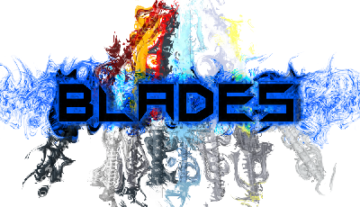
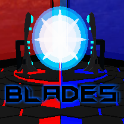

Description
A team match-based sword-fighting game featuring strategic loadouts, colorful maps, tactical game modes, character customization, and leaderboards. More than 80 perks and 15 abilities to choose from! Negate, steal, evolve, empower, debuff, heal, slow! Min-max endless possibilities and create your own loadouts! Lead your team to victory and top the leaderboard!